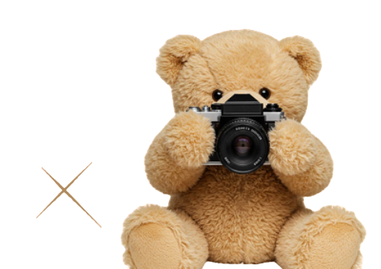

02:20

Please Choose Your Favourite Palace Grid


الرجاء إدخال النقود بقارئ الكاش
Please insert cash into the reader
الرجاء الدفع بجهاز نقاط البيع
Please pay at the card terminal
بانتظار تأكيد الموظف بعد نجاح العملية
Waiting for staff to confirm the payment

Turning on the camera…
Copies:
1
Choose Your Frame
Add Stickers
Tap a sticker to add it, drag to move, use the gold handle to rotate and the corner handle to resize.